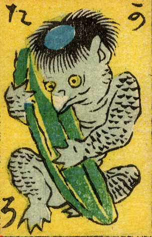

河童；カッパ，河太郎；カワタロウ

河童。瓜を抱いて座っている。頭には皿があり、鼻面は嘴のようになっている。肌は青色で全身に鱗状の模様がある。
著作者：豊貞／出典：親書誌：U426_nichibunken_0225：大新板ばけ物ずくし；オオシンバンバケモノズクシ／日付：2010／資源識別子：U426_nichibunken_0225_0013_0000
Copyright (c)2010- International Research Center for Japanese Studies, Kyoto, Japan. All rights reserved.